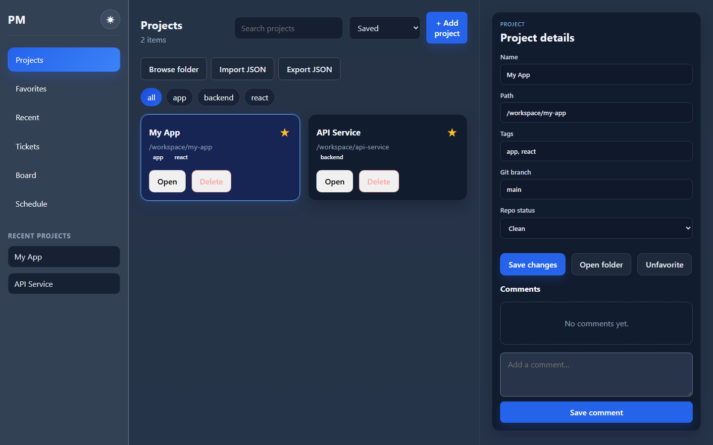
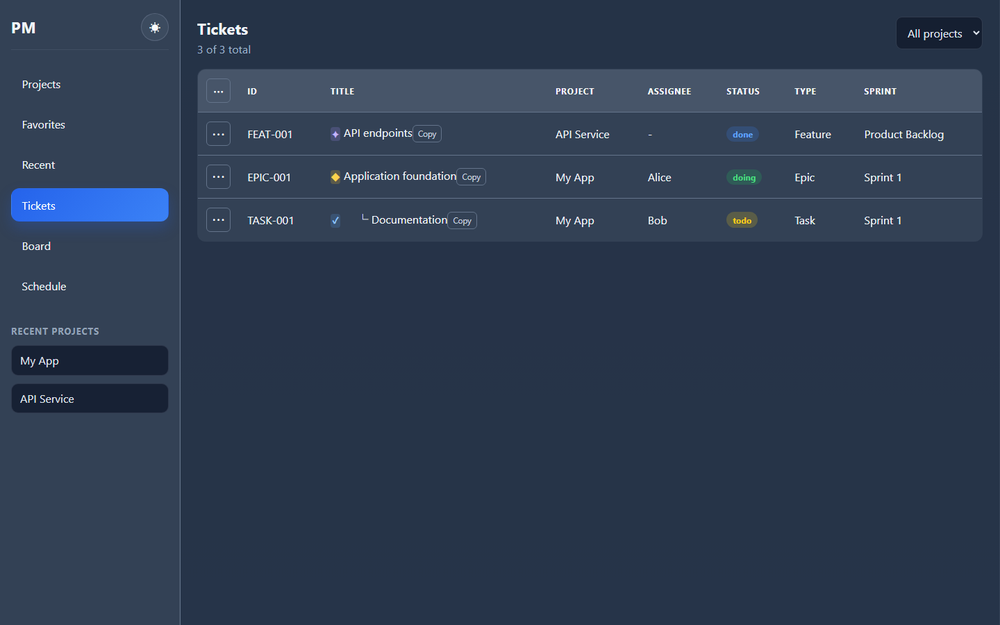
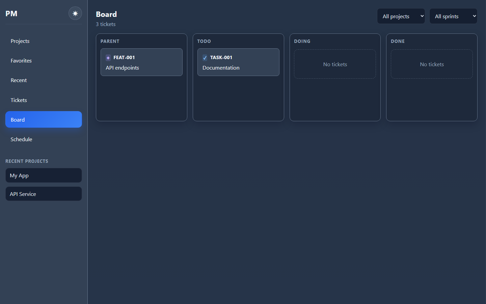
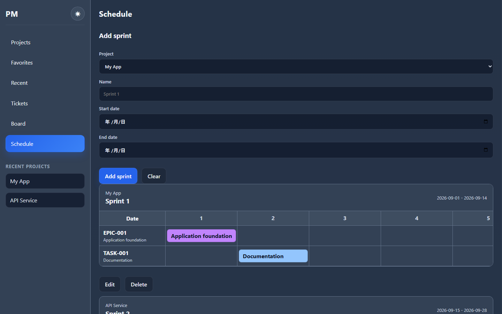

1. システム概要
プロジェクト、チケット、スプリントを一元管理するWebアプリケーション。担当者、進捗、親子関係、作業日程を記録し、一覧・ボード・日程表で確認する。
| 項目 | 内容 |
|---|---|
| 主な利用目的 | 個人の作業管理、対応漏れの防止、活動の振り返りと報告資料の整理 |
| 利用形態 | ブラウザーからPHP Webサーバーへアクセスする |
| 対象範囲 | 02.src/Web_base の画面・PHP API、および付属DB構成 |
| 仕様の基準 | 作成日時点のソースコード。将来の機能案は実装済み仕様に含めない |
2. システム構成
HTML / CSS / JavaScript→Webサーバー
PHP API / PDO→MySQL または SQLite
フロントエンドは静的ファイルとブラウザー標準JavaScriptで構成する。実行時にNode.js、npm、ビルド処理は不要。ブラウザーのlocalStorageにもデータを保存する。
| 配置 | 役割 |
|---|---|
02.src/Web_base/index.html | 画面エントリー |
02.src/Web_base/app.js | 画面描画、状態管理、操作、API通信 |
02.src/Web_base/src/styles.css | 画面スタイル |
02.src/Web_base/api.php | JSON APIとDBアクセス |
00.secret/ | 非公開の.env、SQLite DB。公開ディレクトリの外に配置 |
02.src/database/ | MySQLセットアップSQL、サンプル投入SQL、移行用スクリプト |
3. 画面・機能仕様
| 画面 | 主な機能 |
|---|---|
| Projects | プロジェクトの追加・編集・削除、検索、タグ絞り込み、並べ替え、お気に入り、詳細・コメント表示。JSONインポート／エクスポート |
| Favorites / Recent | お気に入りプロジェクト、最近開いたプロジェクトの表示 |
| Tickets | プロジェクト別チケット一覧、追加・編集・削除、担当者・ステータス・種別・スプリント設定、備考、親子階層、折り畳み、ドラッグによる並べ替え |
| Board | Parent / Todo / Doing / Done 列、プロジェクト・スプリント絞り込み、ドラッグでステータス移動、ダブルクリック編集 |
| Schedule | スプリント追加・編集・削除、プロジェクトと期間の指定、スプリント期間に沿ったチケットの日程表示 |
| 共通 | ダーク／ライトテーマ切り替え |
3.1 プロジェクト管理
Add projectから登録し、選択したプロジェクトの詳細を編集してSave changesで保存する。星の操作でお気に入りを切り替える。JSON出力の対象はプロジェクト配列。入力は配列、またはdataプロパティに配列を持つJSONを受け付ける。

3.2 チケット管理
チケットには内部IDと表示用チケットIDを持たせる。編集フォームで選択できる種別はTask / Feature / Bug / Epic。状態はtodo / doing / doneで、表示色はそれぞれ黄・緑・青。開始日と終了日を指定でき、両方を入力した場合は終了日が開始日より前の保存を受け付けない。
状態に応じた日付補完処理では、todoは日付を空にし、doingは開始日を維持または当日で補完して終了日を空にし、doneは開始日を維持または当日で補完して終了日を当日にする。

3.3 ボード管理
Parent列と状態別の3列で作業を確認する。Parent列は親を持たないEpic以外のチケットが対象。ボード上のドラッグ操作で進捗を変更できる。

3.4 スプリント・日程管理
スプリント名・開始日・終了日を必須とし、プロジェクトに関連付ける。終了日は開始日以降とする。日程表はスプリント期間の日付列と所属チケットを表示する。チケットの日付がない場合には表示用の補完日程を使用するため、実際の確定計画とは区別する必要がある。

4. データ仕様
DBはエンティティごとのテーブルではなく、種類別の配列をJSONとして保存する。以下は主なデータ項目。
| 種類 | フィールド | 内容 |
|---|---|---|
| projects | id, name, path, favorite, tags, gitBranch, repoStatus, comments | 内部ID、名称、パス、お気に入り、タグ配列、ブランチ名、リポジトリ状態、コメント配列 |
| tickets | id, ticketId, title, projectId, sprint, ticketType, parentId, order, assignee, status, notes, startDate, endDate | 内部ID、表示ID、件名、所属プロジェクト、スプリント名、種別、親ID、順序、担当者、状態、備考、開始・終了日 |
| sprints | id, name, startDate, endDate, projectId | 内部ID、名称、開始・終了日、所属プロジェクト |
| recent | プロジェクトIDの配列 | 最近開いたプロジェクトの記録 |
4.1 DBテーブル
| テーブル | 列 | 仕様 |
|---|---|---|
| project_manager_app_state | id | 自動採番の主キー |
| key | 一意。projects / tickets / sprints / recent | |
| value | MySQLはJSON型、SQLiteはTEXT型。データ種類全体のJSON配列 | |
| updated_at | 既定値は作成時刻。MySQLは更新時にも自動更新。SQLiteの現行更新SQLでは更新時刻を再設定しない |
保存時は同じkeyの行を追加または更新する。チケットはprojectIdとparentIdで関連を表し、スプリントは名称でチケットに関連付ける。JSON内の関連はDBの外部キー制約で保証されない。
5. API仕様
エンドポイント：api.php?action=アクション名。レスポンスはJSON（UTF-8）。画面は取得にGET、保存にPOSTを使用する。
| 取得（GET） | 保存（POST） | 対象 |
|---|---|---|
| projects | save-projects | プロジェクト配列 |
| tickets | save-tickets | チケット配列 |
| sprints | save-sprints | スプリント配列 |
| recent | save-recent | 最近のプロジェクトID配列 |
5.1 入出力
POSTのContent-Typeはapplication/json。取得・保存とも正常時はdataに対象データを返す。保存は1件の差分ではなく、対象種類全体を置き換える。
{ "data": [] }5.2 エラーとHTTP
| ステータス | 内容 |
|---|---|
| 400 | missing_action（アクションなし）、unsupported_action（未対応のアクション） |
| 500 | database_connection_failed（DB接続・初期化失敗）。messageに例外メッセージを含む |
| 204 | OPTIONSへの応答 |
現行APIはCORSの許可元に*を設定する。アクションごとのHTTPメソッド強制や、入力データの厳密な型・必須項目検証は実装されていない。
6. 導入・運用仕様
| 項目 | 条件 |
|---|---|
| PHP | 8.1以上、PDOを有効にする |
| SQLite利用 | PDO SQLite拡張。00.secretディレクトリとDBへの書き込み権限が必要 |
| MySQL利用 | PDO MySQL拡張、MySQLサーバー。付属セットアップSQLはMySQL 8.0以降を対象 |
| 公開ルート | 02.src/Web_baseに限定する |
6.1 ローカル起動例
プロジェクト直下から次を実行する。
cd 02.src/Web_base C:\xampp\php\php.exe -S 127.0.0.1:8001
ブラウザーでhttp://127.0.0.1:8001/index.htmlを開く。
6.2 環境設定
02.src/Web_base/.env.exampleを参考に00.secret/.envを配置する。既存のプロセス環境変数がある場合はそちらを優先する。
| 変数 | 用途・既定値 |
|---|---|
| DB_DRIVER | sqlite または mysql。未指定時はmysql |
| DB_PATH | SQLiteファイル。既定はproject_manager.sqlite。相対パスは00.secret基準 |
| DB_HOST / DB_PORT | MySQL接続先。既定は127.0.0.1 / 3306 |
| DB_NAME / DB_USER / DB_PASS | MySQLのDB名・ユーザー・パスワード。既定はproject_manager / root / 空文字 |
APIはテーブルを自動作成する。MySQL接続・初期化が失敗すると、00.secret/project_manager.sqliteへの接続を試みる。初期取得で保存済みのkeyがない場合はコード内の初期データを返す。
6.3 データ保全
DBと設定ファイルを運用側でバックアップする。画面のJSON出力はプロジェクトのみを対象とするため、チケット・スプリントを含む全体バックアップにはDBのバックアップが必要。秘密情報とDBファイルは公開・Git管理の対象から外す。
7. 現行の制約・確認事項
- ユーザー認証・ユーザー別権限管理は対象コードに実装されていない。
- 種類別の全件配列を保存するため、複数利用者が同時更新すると、後の保存が先の変更を上書きする可能性がある。
- API取得失敗と空配列を画面側で区別せず、localStorageや初期データへ戻る場合がある。
- 画面の保存処理はHTTPエラーステータスの成功確認を行わないため、画面上の操作完了だけではDB保存成功を保証できない。
- MySQL障害時はSQLiteへ切り替わる。保存先が変わるため、稼働中の実際のDBを確認する必要がある。
- チケット種別StoryはID接頭辞・アイコン定義に含まれるが、現在の編集フォームの選択肢には含まれない。
- チケットの日付未設定時の日程表には表示用の補完が入る。
- MySQL本番環境の接続・配備確認と、ブラウザーでのCRUD・ドラッグ操作の総合確認は、既存の残課題として記録されている。本仕様書の作成では動作試験を実施していない。
8. 参照元・改訂履歴
参照元：README.md、02.src/Web_base/index.html、app.js、api.php、03.log/leftover_tasks.txt。画面例は01.doc/imagesの既存画像を使用しており、最新画面との完全一致を保証するものではない。
| 版 | 日付 | 内容 |
|---|---|---|
| 1.0 | 2026-10-19 | 現行実装に基づくHTML仕様書の初版作成 |